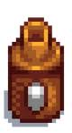
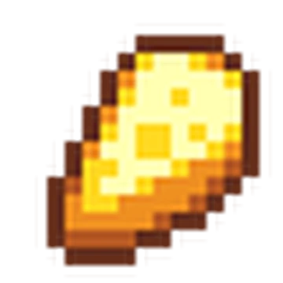
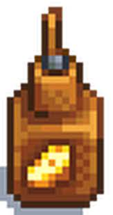
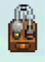

Productos Artesanales
Mayonesa
La mayonesa es un producto costoso y facil de hacer si tienes un gallinero se hace con la mayonesera y huevos tanto de gallina como de pato y hasta de dinosaurio jiji stardew esta lleno de sorpresas

Queso
El queso puedo decir que es muy costoso demasiado costoso se hace con la maquina para procesar queso y leche de los animales tanto de las vacas como de las cabras siempre es bueno tewner muchisimos animales en las granjas por los alimentos naturales que ofrecen


Aceite de Trufas
El aceite de trufas es un escecial en la coina gourmet y se hace muy facil con una acitera y con trufas que los cerdos encunetran en tu granja
